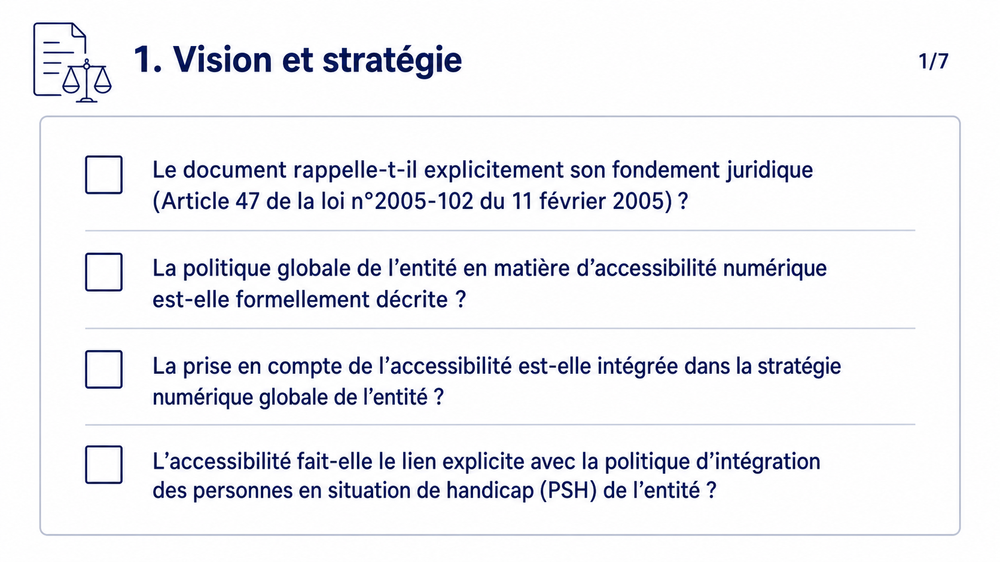
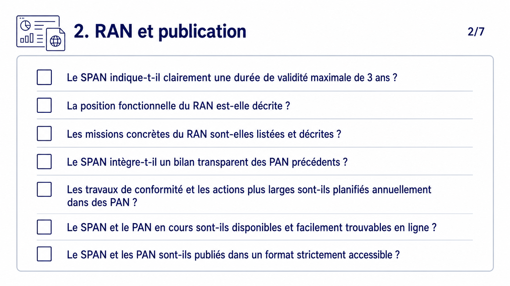
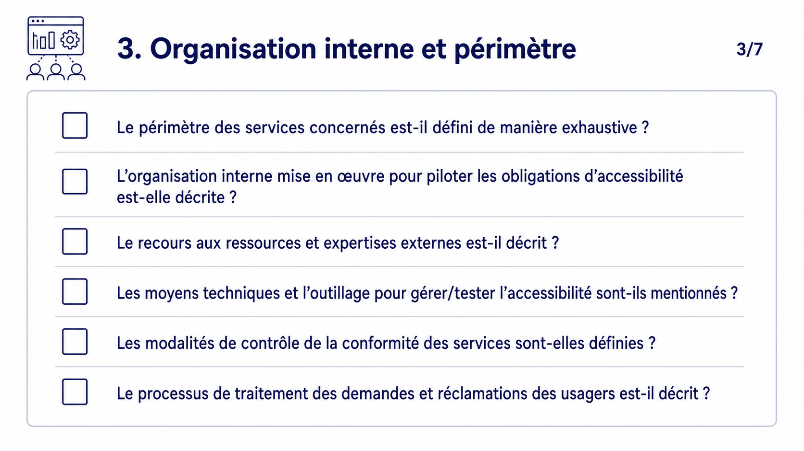
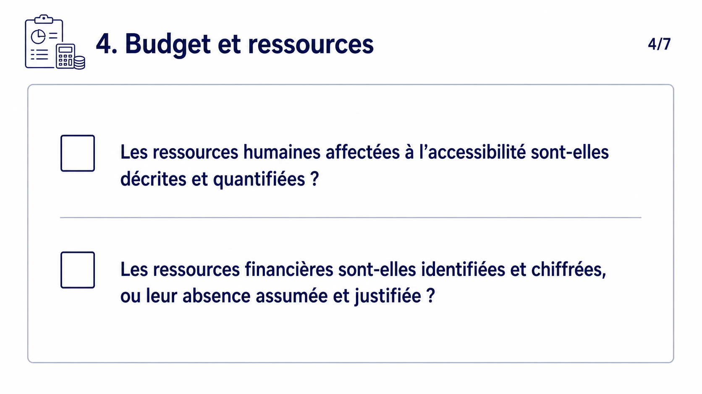
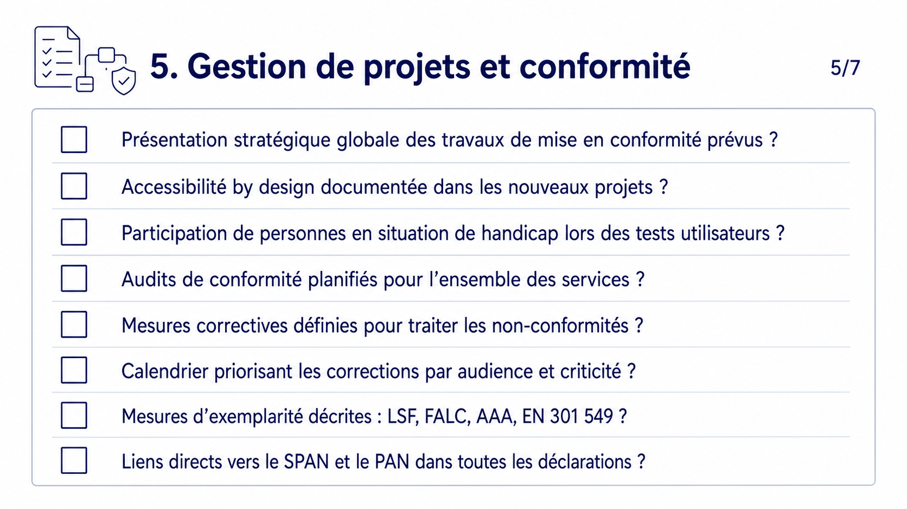
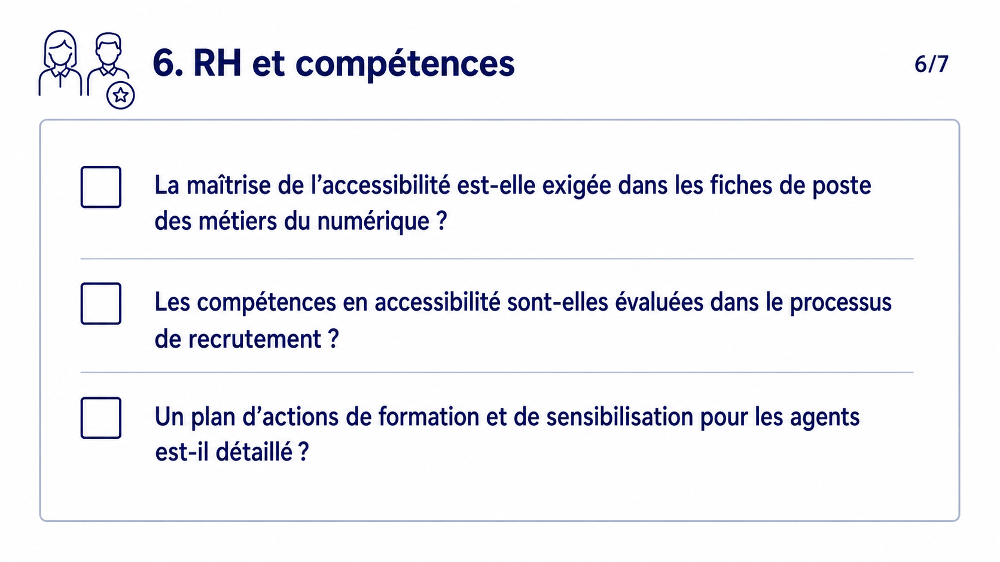
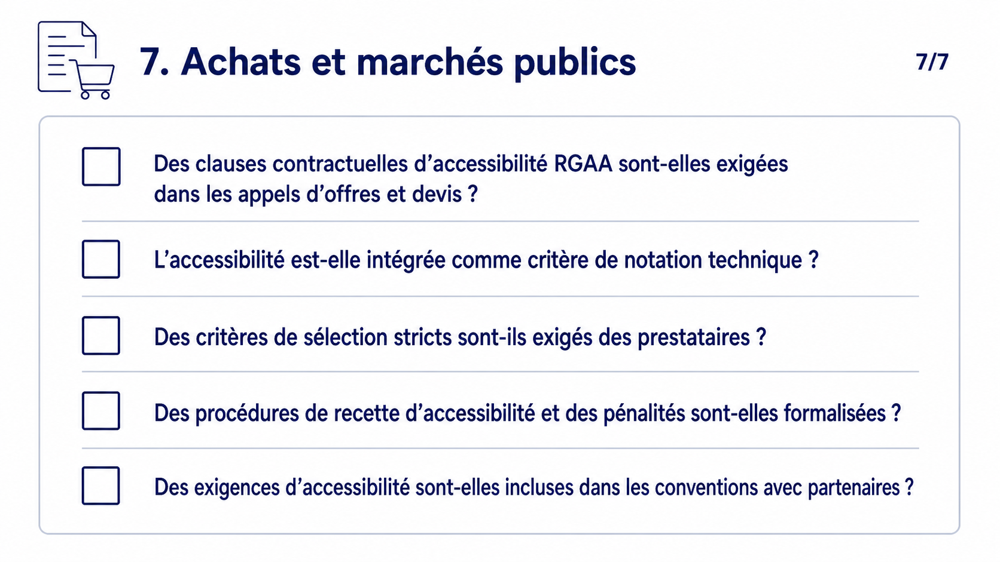

Checklist SPAN opérationnel
Présentation - Checklist SPAN opérationnel
Slide 1 sur 7 - 1. Vision et stratégie
Slide 1 - 1. Vision et stratégie

La slide présente quatre points de contrôle pour vérifier qu’un SPAN rappelle son fondement juridique, décrit la politique d’accessibilité numérique de l’entité, l’intègre à la stratégie numérique globale et fait le lien avec la politique d’intégration des personnes en situation de handicap.
Textes visibles
- 1/7
- 1. Vision et stratégie
- Le document rappelle-t-il explicitement son fondement juridique (Article 47 de la loi n°2005-102 du 11 février 2005) ?
- La politique globale de l’entité en matière d’accessibilité numérique est-elle formellement décrite ?
- La prise en compte de l’accessibilité est-elle intégrée dans la stratégie numérique globale de l’entité ?
- L’accessibilité fait-elle le lien explicite avec la politique d’intégration des personnes en situation de handicap (PSH) de l’entité ?
Message à retenir
Un SPAN doit ancrer clairement l’accessibilité numérique dans le cadre légal, la stratégie numérique et la politique handicap de l’entité.
Slide 2 - 2. RAN et publication

La slide liste sept contrôles : durée maximale du SPAN, position et missions du RAN, bilan des PAN précédents, planification annuelle, disponibilité en ligne du SPAN et du PAN, et publication dans un format accessible.
Textes visibles
- 2/7
- 2. RAN et publication
- Le SPAN indique-t-il clairement une durée de validité maximale de 3 ans ?
- La position fonctionnelle du RAN est-elle décrite ?
- Les missions concrètes du RAN sont-elles listées et décrites ?
- Le SPAN intègre-t-il un bilan transparent des PAN précédents ?
- Les travaux de conformité et les actions plus larges sont-ils planifiés annuellement dans des PAN ?
- Le SPAN et le PAN en cours sont-ils disponibles et facilement trouvables en ligne ?
- Le SPAN et les PAN sont-ils publiés dans un format strictement accessible ?
Message à retenir
Le SPAN doit rendre visibles le pilotage par le RAN, la durée du cycle, les PAN et la publication accessible des documents.
Slide 3 - 3. Organisation interne et périmètre

La slide regroupe six points de contrôle sur le périmètre des services, l’organisation interne, le recours à des expertises externes, les moyens techniques, les modalités de contrôle et le traitement des demandes ou réclamations des usagers.
Textes visibles
- 3/7
- 3. Organisation interne et périmètre
- Le périmètre des services concernés est-il défini de manière exhaustive ?
- L’organisation interne mise en œuvre pour piloter les obligations d’accessibilité est-elle décrite ?
- Le recours aux ressources et expertises externes est-il décrit ?
- Les moyens techniques et l’outillage pour gérer/tester l’accessibilité sont-ils mentionnés ?
- Les modalités de contrôle de la conformité des services sont-elles définies ?
- Le processus de traitement des demandes et réclamations des usagers est-il décrit ?
Message à retenir
Le SPAN doit préciser le périmètre, les responsabilités, les moyens de contrôle et le canal de traitement des demandes usagers.
Slide 4 - 4. Budget et ressources

La slide présente deux questions de vérification : les ressources humaines dédiées à l’accessibilité sont-elles décrites et quantifiées, et les ressources financières sont-elles identifiées et chiffrées ou leur absence justifiée.
Textes visibles
- 4/7
- 4. Budget et ressources
- Les ressources humaines affectées à l’accessibilité sont-elles décrites et quantifiées ?
- Les ressources financières sont-elles identifiées et chiffrées, ou leur absence assumée et justifiée ?
Message à retenir
Un SPAN exploitable doit expliciter les ressources humaines et financières réellement mobilisées ou justifier leur absence.
Slide 5 - 5. Gestion de projets et conformité

La slide liste huit contrôles sur la stratégie de conformité, l’accessibilité dès la conception, la participation des personnes en situation de handicap, les audits, les mesures correctives, la priorisation des corrections, les mesures d’exemplarité et les liens vers le SPAN et le PAN dans les déclarations.
Textes visibles
- 5/7
- 5. Gestion de projets et conformité
- Présentation stratégique globale des travaux de mise en conformité prévus ?
- Accessibilité by design documentée dans les nouveaux projets ?
- Participation de personnes en situation de handicap lors des tests utilisateurs ?
- Audits de conformité planifiés pour l’ensemble des services ?
- Mesures correctives définies pour traiter les non-conformités ?
- Calendrier priorisant les corrections par audience et criticité ?
- Mesures d’exemplarité décrites : LSF, FALC, AAA, EN 301 549 ?
- Liens directs vers le SPAN et le PAN dans toutes les déclarations ?
Message à retenir
La conformité doit être pilotée comme un cycle projet : conception, tests, audits, corrections, priorisation et traçabilité publique.
Slide 6 - 6. RH et compétences

La slide présente trois points de contrôle RH : intégrer l’accessibilité dans les fiches de poste des métiers du numérique, évaluer les compétences au recrutement et détailler un plan de formation ou de sensibilisation des agents.
Textes visibles
- 6/7
- 6. RH et compétences
- La maîtrise de l’accessibilité est-elle exigée dans les fiches de poste des métiers du numérique ?
- Les compétences en accessibilité sont-elles évaluées dans le processus de recrutement ?
- Un plan d’actions de formation et de sensibilisation pour les agents est-il détaillé ?
Message à retenir
L’accessibilité doit devenir une compétence attendue, recrutée et entretenue dans les métiers du numérique.
Slide 7 - 7. Achats et marchés publics

La slide liste cinq vérifications pour les achats et marchés publics : clauses RGAA dans les appels d’offres et devis, critère de notation technique, critères stricts de sélection des prestataires, procédures de recette avec pénalités et exigences dans les conventions avec partenaires.
Textes visibles
- 7/7
- 7. Achats et marchés publics
- Des clauses contractuelles d’accessibilité RGAA sont-elles exigées dans les appels d’offres et devis ?
- L’accessibilité est-elle intégrée comme critère de notation technique ?
- Des critères de sélection stricts sont-ils exigés des prestataires ?
- Des procédures de recette d’accessibilité et des pénalités sont-elles formalisées ?
- Des exigences d’accessibilité sont-elles incluses dans les conventions avec partenaires ?
Message à retenir
Les achats doivent intégrer l’accessibilité dans les clauses, la notation, la sélection, la recette et les conventions partenaires.